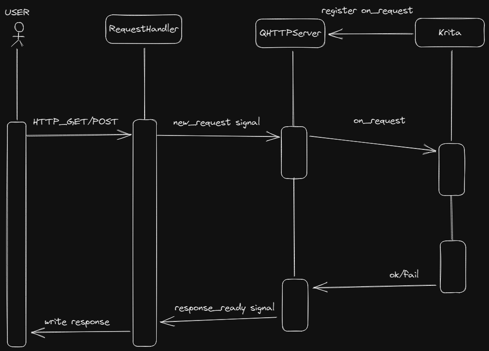

Expose Krita API by a HTTP Server, which relies on python standard
module http.server. for simplicity, it’s a
single-thread HTTP server, which will read request body
and respond a json.
curl -X POST -d '{"delay": 200}' http://localhost:1976TODO Not implemented
If you’d like to imporve or modify this, check this sequence diagram explaining the handling process of an HTTP Request.
